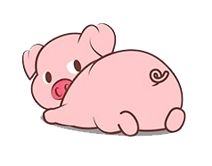

How to Play
There are two players. The player whose turn it is rolls the dice. The total of the roll is added to the current player's score, unless either die comes up as a “one”. If this happens, this player's turn is over, and it is the other player’s turn. After each roll, the current player can either roll again, (assuming a “one” was not rolled) or if the current player feels that luck is running thin, they can pass to the other player. The first player to get 30 points or higher wins.
Oh, and if you roll two “ones” (snake eyes), your current score gets zeroed out. So don’t do that.